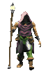

Братья и сёстры!
Примите этот альбом как символ нашего вечного духовного единства!! Возлюбите всех указанных на страницах этого священного текста! Да не утаите зло ни на кого из них и не откажите в руке помощи ни одному из них, ибо все они святы и непорочны в мыслях и поступках своих!!! Аминь!
Сокурсники мои! Внемлите увещеваниям моим, установите разрешение вашего монитора на 1024x768 точек (пуск –> настройка –> панель управления –> экран –> параметры –> разрешение экрана). Установите вид вашего браузера «во весь экран» (прямо сейчас нажмите кнопку «F11»).
Иже возжелаете лицезреть фотографии любого брата али иной сестры Вашей, укажите оного нажатием левой кнопкой мыши на главной странице и далее жмите на фотографию, чтобы увидеть следующую. Под фотографией помещён комментарий к ней, и, когда это необходимо, ниже справа указано от какого святого исходит приведённое откровение. А ещё ниже, под чертой, есть три кнопки. Перваю нажмёшь – на предыдущую страницу пойдёшь; средняю нажмёшь – на главную страницу пойдёшь; а третию нажмёшь – дальше путь держать будешь. Ежели нет пути назад или вперёд, то нет и соответствующей кнопки. Если фото занимает весь экран, то для просмотра комментария можно нажать «пробел» или «end», также можно покрутить колёсико мышки. Чтобы подняться наверх – «home» или, опять же, покрутить колёсико мышки. Если хотите видеть и фотографию, и комментарий, уменьшите масштаб отображения страницы вашим браузером (зажмите “ctrl” и крутаните один - два раза на себя колёсико мышки). И не забудьте закрыть то окошечко, которое выскакивало само, из которого Вы и запустили сам фотоальбом (особенно рекомендуется пользователям маломощных компьютеров). Рекомендуется скопировать диск на компьютер, дабы "не заездить" диск во время первых тотальных просмотров. Но так как с винчестера альбом автоматически не запускается, открывайте альбом запуском файла "Старт.bat"
Заветов более не имею, но желаю высказать слова глубочайшей признательности всем, кто поддерживал меня во время создания нашего фотоальбома, который представляет из себя около 900 фотографий и 2188 страниц. Спасибо всем, кто приносил не только те фотографии, где запечатлён он сам. Спасибо всем, кто предлагал свою помощь. Также спасибо всем, кто был рад помочь, но не смог в силу обстоятельств. Отдельное спасибо Ниночке Гергерт, которая была рада помочь даже во внешних атрибутах диска. Именно ей и Сашечке Урванцевой, которая так же была рада помочь, мы обязаны ровно обрезанными вкладышами в коробочку для диска. Моей и Василия Шишкина подруге Танечке Невзоровой я благодарен за создание flash-ки (то окошечко, что появляется с самого начала). Алексею Паутову огромное спасибо за помощь в сортировке блоков фотографий нескольких наших товарищей. Не хватит никаких слов благодарности, чтобы оценить вклад Полиночки Шевелёвой в создание альбома. Именно ей мы обязаны организацией сбора фотографий; набором текста большей части ответов на вопросы анкеты; дизайном вкладыша в коробочку от диска; определением, того, кто на каких фотографиях присутствует (я-то многих из покинувших нас по имени-то вспомнить не мог); определением хронологической последовательности фотографий для части наших товарищей; определением размеров отображения фотографий на экране (у каждой фотографии свои параметры); помощью мне в переходе от глючащей программы по полуавтоматическому созданию html-страниц к ручной обработке; организации блоков страниц для каждого сокурсника (частично этим же и занимался Алексей Паутов); записью части дисков с альбомом. Также я благодарен Полине за грамматическую правку текстов, советы к оформлению альбома и тестирование его работы. Если сказать проще, то на Полину пришлось около трети работы по созданию альбома. От всех нас благодарность Василию Шишкину за рождение идеи создания диска с фотографиями наших сокурсников и фотосъёмку наших преподавателей. Ну а на меня пришлись: организация всего процесса создания альбома; окончательный сбор фотографий и анкет; набор текста небольшой части ответов на вопросы анкеты; сканирование и коррекция фотографий, создание базовых 900 html-страниц с комментариями; определение хронологической последовательности фотографий для большей части наших товарищей; оформление альбома (кстати, в качестве фона используется фрагмент «Томской писаницы»); создание системы ссылок в итоговых 2 тысячах html-страницах и исправление моих ошибок, заложенных в планировании работ; запись альбома на диски.
Напоследок хочется попросить сообщать мне о любых ошибках, допущенных мною. Буду очень рад предложениям по улучшению работы или внешнего вида альбома. С учётом Ваших пожеланий и будет создана вторая версия альбома (когда у меня будет лишние 100-200 часов для улучшения системы ссылок созданием «превьюшек»). Пишите мне:
feelsmind@mail.ru
Искренне Ваш, Создатель ;)))))